Программа путешествия
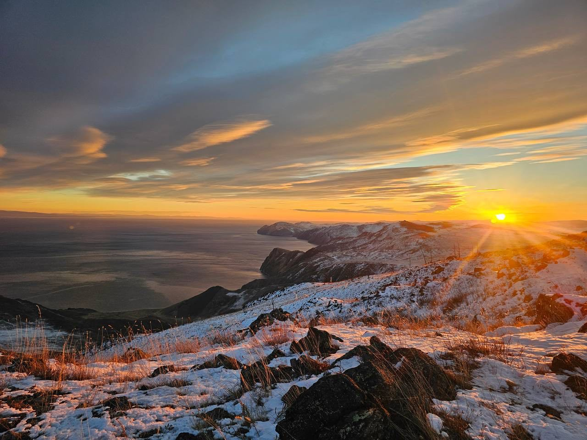
День 1
Прилёт и мягкая адаптация
- прилёт в Иркутск
- Размещение и отдых
- Cвободное время, отдых после перелёта, адаптация к часовому поясу
- 📍 Ночёвка: Иркутск
- 📶 Связь: есть
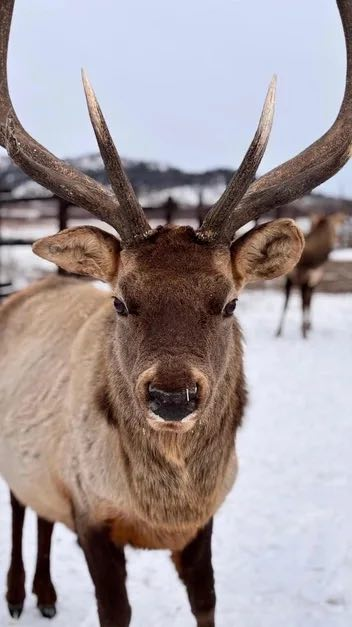
День 2
Активация чувств
- 08:00 — выезд из Иркутска
- 10:00 — полноценный обед в национальном кафе
- 11:30 — посещение мараловой фермы
- 12:30 — устье реки Анга, бухта Ая, древние петроглифы
- 14:00 — Тажеранские степи, смотровые площадки с панорамами Байкала и Ольхона
- 15:00 — встреча и беседа с шаманкой
- 16:30 — пролив Малое Море: ледовые гроты, наплески, природная ледовая галерея
- 18:00 — заселение в гостиницу на Ольхоне
- 19:30 — ужин
- 🚗 Пробег: ~350 км
- 📶 Связь: есть
Иркутск → устье реки Анга → Тажеранские степи → Ольхон

День 3
Энергия великого озера
- 08:30 — завтрак
- 09:00 — старт дня, выезд на лёд
- 10:30–11:00 — посёлок Хужир, сердце острова
- 11:30 — Харанцы, бухта Песчаная
- 13:00 — реликтовый лес Ольхона, Прибайкальский национальный парк
- 14:30 — Узуры, «Хранитель Байкала»
- 15:00 — мыс Любви, смотровая площадка
- 16:30 — мыс Хобой: прогулка, пикник, чайная церемония с байкальскими травами
- 17:30 — мыс Три Брата
- 18:00 — степи Ольхона
- 19:00 — возвращение в Хужир, ужин
- 19:30 — баня на берегу Байкала
- 🚗 Пробег: ~200 км
- 📶 Связь: может периодически отсутствовать
Север Ольхона — по земле и по льду Байкала
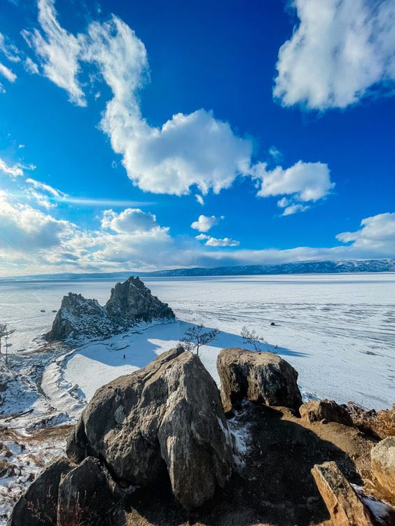
День 4
Завершение протокола
- 09:00 — завтрак, выезд из гостиницы
- 10:00 — остров Огой, Ступа Просветления: лёгкий трекинг, ритуалы
- 12:00 — ледовые гроты, катание на коньках, «поцелуй Байкала»
- 13:30 — лёд Шаманки, ледовая выставка природных фигур
- 14:30 — острова: Харанцы → Крокодил → Ёдр
- 15:30 — байкальские торосы, кристально-голубой лёд
- 16:30 — закат на льду или со смотровой площадки
- 17:00 — выезд в Иркутск
- 22:00 — прибытие
- 🚗 Пробег: ~500 км
- 📶 Связь: есть
Ольхон → ледовые миры Байкала → Иркутск

День 5
знакомство с Байкалом
- 08:30 — завтрак
- 09:30 — выезд в Листвянку (~70 км)
- 11:00 — Байкальский музей
- 12:30 — канатная дорога на Камень Черского
- 14:00 — обед (омуль, позы, уха)
- 15:30 — набережная, рынок, сувениры
- 17:00 — прогулка по льду Байкала
- 19:00 — возвращение в Иркутск
- 🚗 Пробег: ~150 км
- 📶 Связь: есть
- 📍 Ночёвка: Иркутск
Иркутск → Листвянка → Иркутск
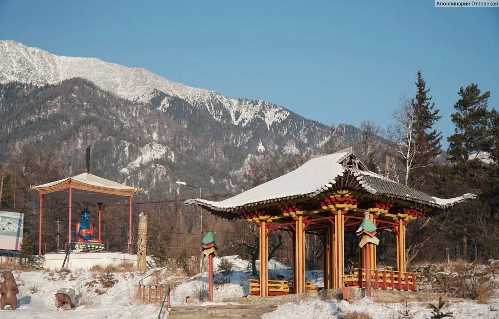
День 6
Тункинская долина
- 07:30 — завтрак
- 08:00 — выезд в Тункинскую долину (~210 км)
- Программа на курорте Аршан:
- Ступа Даши-Гомана
- Хойморский дацан (вход свободный)
- 💧 питьевые и лечебные минеральные источники тропа здоровья, водопад на реке Кынгарга
- Монгольский рынок (свободное время)
- Т♨️ купание в термальных источниках Аршанская сель (каменная река)
- 🦌 этно-комплекс «Саянский Марал»
- 15:00 — обед
- 16:00 — прогулки, горные панорамы
- 18:00 — выезд обратно в Иркутск
- 22:00 — прибытие
- 🚗 Пробег: ~420 км
- 📶 Связь: местами
- 📍 Ночёвка: Иркутск
Иркутск → Аршан / Тунка → Иркутск
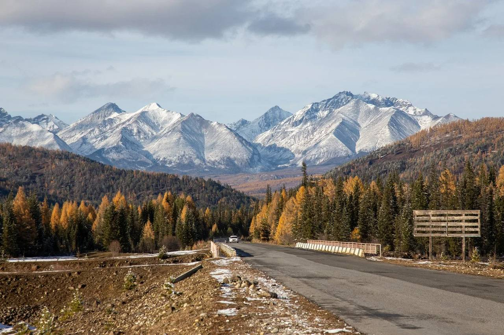
День 7
Возвращение
- — завтрак
- трансфер в аэропорт
- — перелёт домой
Иркутск → Уфа
✅ Включено
- Проживание по всему маршруту
- Питание: завтраки и ужины
- Все трансферы и активности
- Экскурсионное сопровождение
- Все активности, указанные в программе
- профессиональная фото- и видеосъёмка на острове Ольхон с квадрокоптера (дрон)
❌ Дополнительно
- Перелёт
- Обеды
- Личные расходы
Фотогалерея
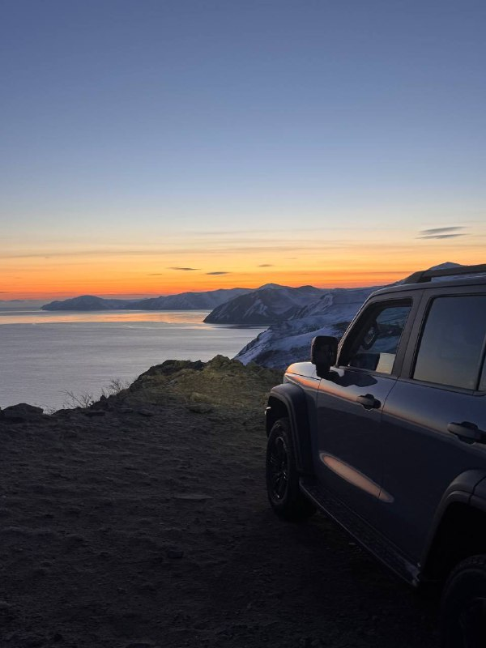
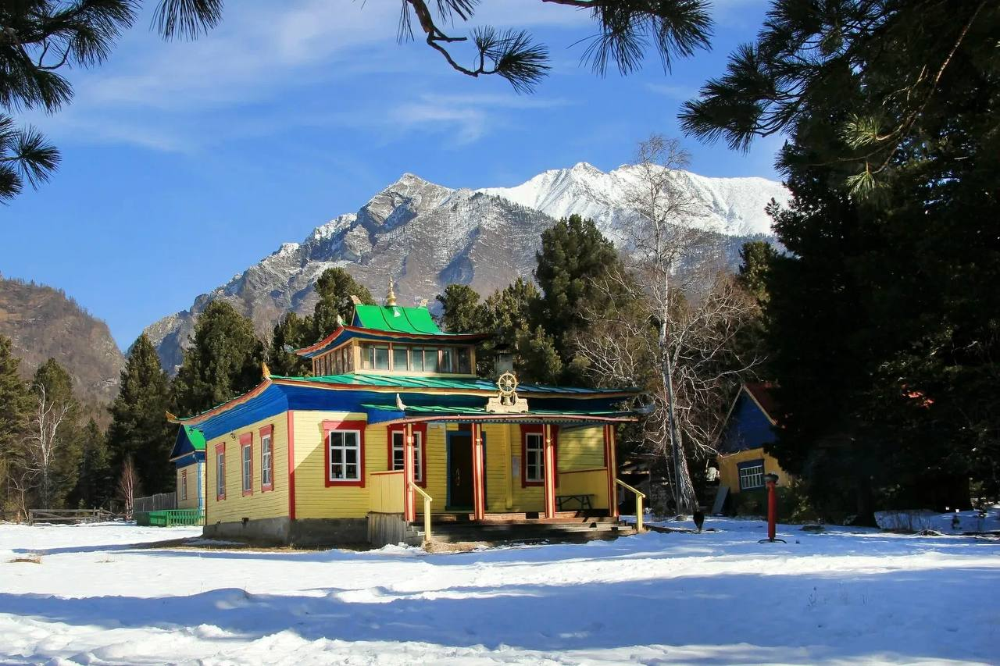
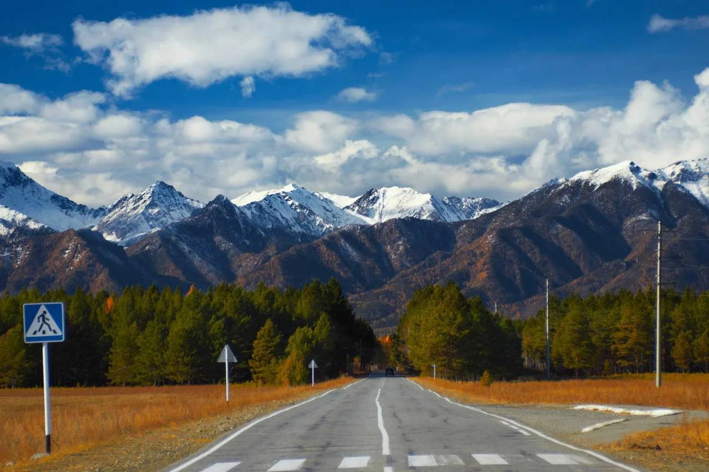
 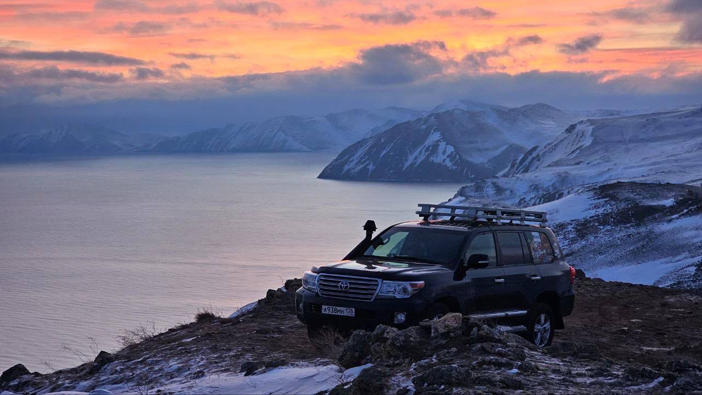
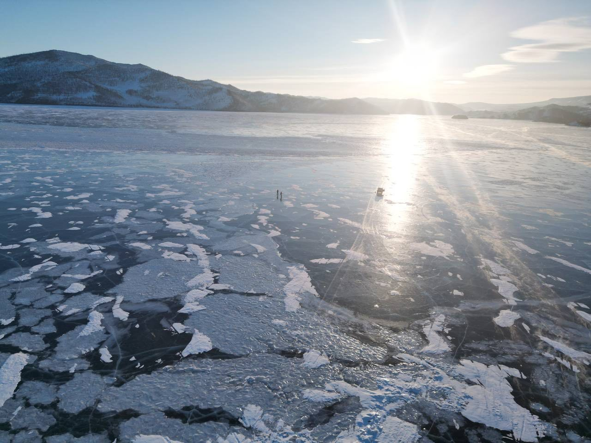
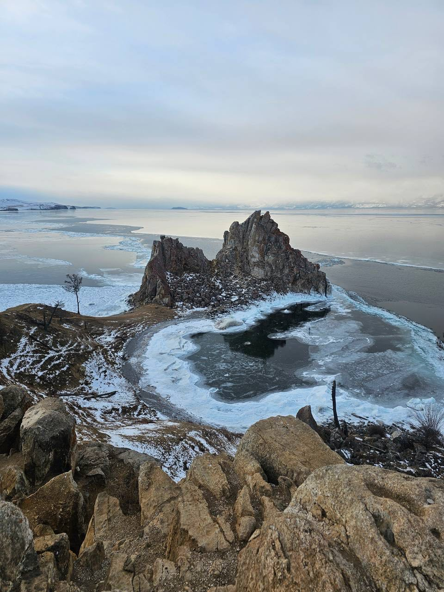
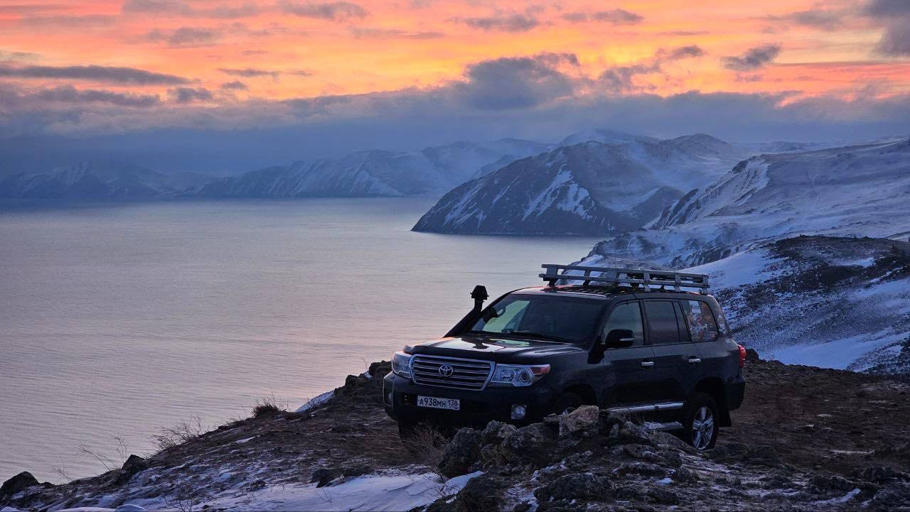
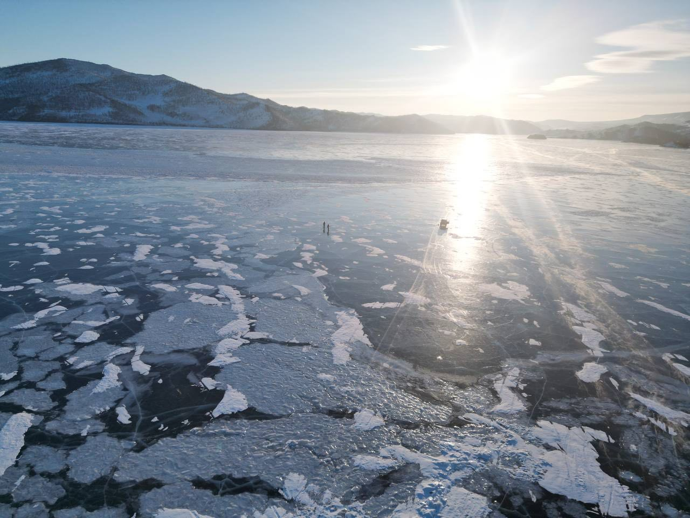
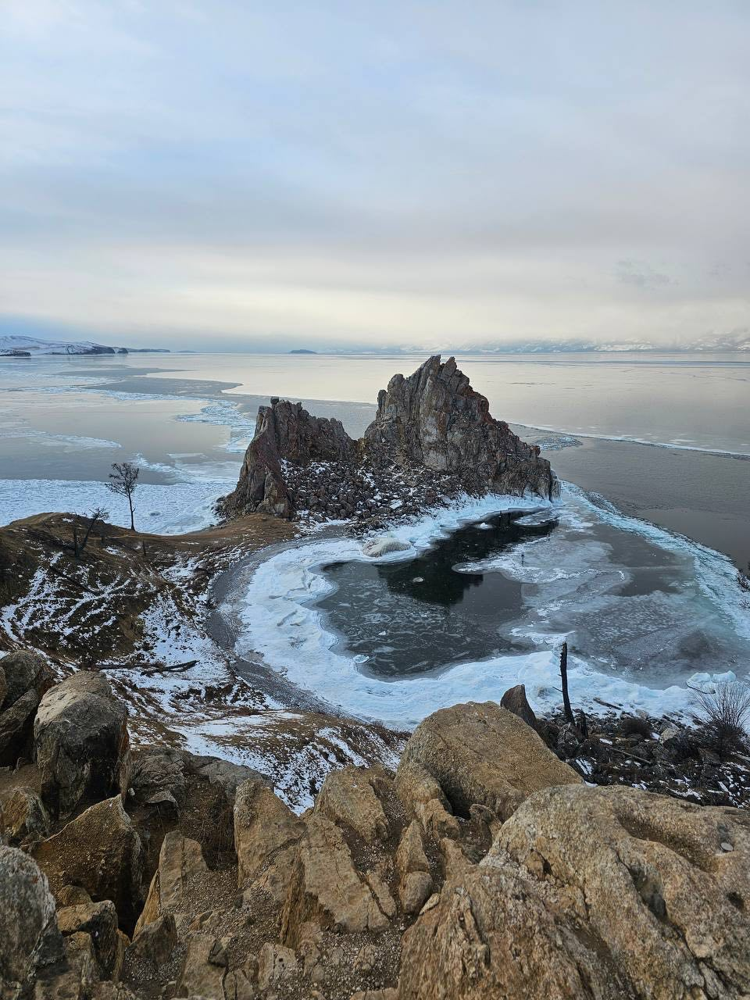
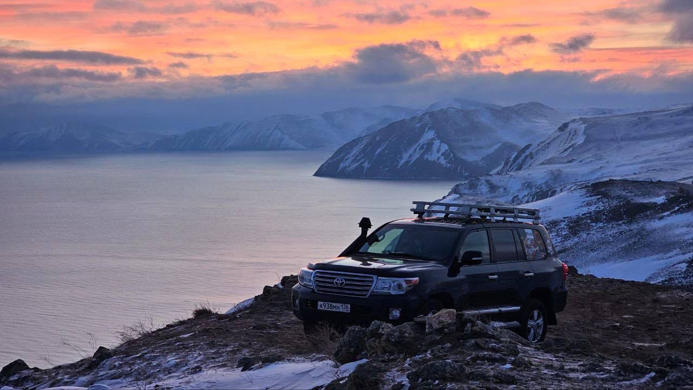
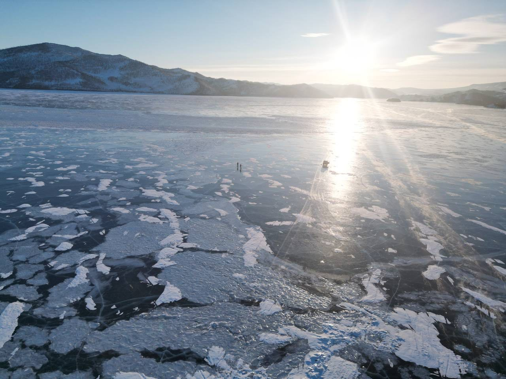
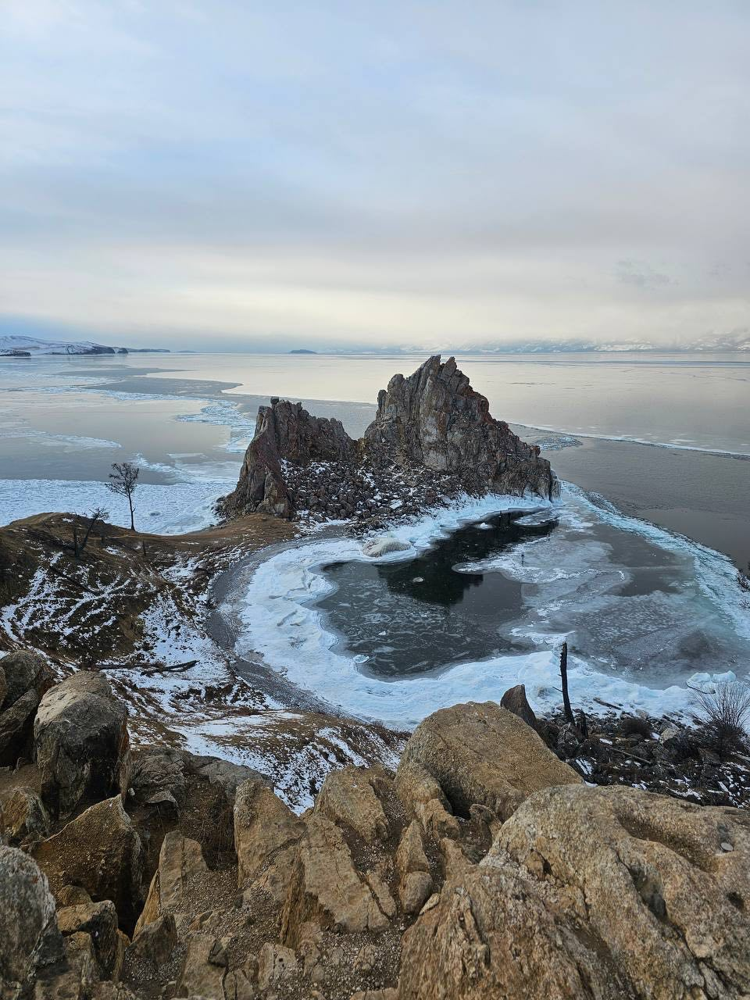
Готовы к приключению?
Забронируйте место в туре на Байкал прямо сейчас. Осталось всего несколько мест!
🚀 Забронировать место